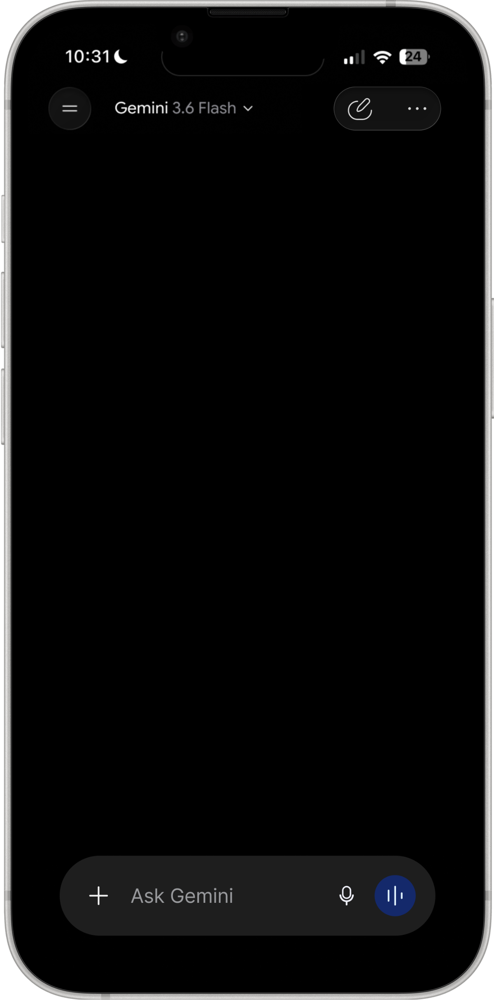

A redesign of Gemini's iOS home screen: two stacks of suggestions in the empty space under the greeting, one for the time and place, one for recent work.
Gemini opens on a greeting and a text field. Nothing on it reflects what you did the last time you opened the app.
Gemini’s home screen today
Most of the first screen is empty
Between the model picker and the text field there is only the greeting. Nothing on the screen hints that Gemini can read a photo or write code.
Research
People skip generic prompts, but use ones drawn from their own work
I watched classmates open their AI assistants. Almost nobody read the suggested prompts; they typed the question they already had. No assistant publishes how often its suggestions get tapped, so I looked for the closest published studies.
Generic suggestions go unclicked
In Nielsen Norman Group's 2025 tests of Amazon's shopping assistant, no participant clicked a suggested prompt without being told to. In a 2026 test in a large chat app, starters written from each user's past chats got 9.4% more clicks than generic ones.
Suggestions land between tasks, not during them
In a five-day field study, developers engaged with 52% of an assistant's suggestions when they came right after a commit. Mid-task, after an edit was declined, they dismissed 62%. Opening an app is a moment between tasks.
Kuo et al., IUI 2026: 15 developers, 229 suggestions in a code editor.
Gemini remembers your chats, but its home screen doesn't
Since August 2025, Gemini learns from past conversations by default, and Google describes the goal as a "personal, proactive" assistant. Yet to reopen a chat, you still scroll the side menu or search for it, and have to remember what it was called.
People do come back to chats: in 135,000 conversations donated by 300 ChatGPT users, a chat's first and last messages were 16.6 hours apart on average.
Searching chatsThe chat it finds
Time and place matter only some of the time
Some requests follow the clock: recipe requests to Claude are 2.3 times as frequent at 6 pm as on average. But across 37.5 million Copilot conversations, health was the top topic on phones at every hour. In a week-long field study of context-aware suggestions on phones, time and location mattered only in certain situations.
Takeaway
Suggestions get used when they come from a person's own chats and show up between tasks, as when the app opens. The time and place should add a card only when together they point to something specific, like dinner near campus at 6 pm.
My first idea was a row of better prompts, but people skip prompts. So I asked what the screen should show, given what Gemini already knows.
From
"How might the home screen suggest better prompts?"
To
"How might the home screen use what Gemini already knows about you?"
A long script in the chat
An idea I set aside
Code blocks in the chat cut off long lines, comments included. I didn't shrink the text: Google's designers would have weighed that already, so I took the current size as the smallest they would accept.
The same script, fullscreen
A fullscreen view
A button opens the code fullscreen. Whole lines fit, but only at the default text size.
Turned sideways, even long lines fit. But few people review code on a phone, and I hadn't checked how many people had the problem, so I set the idea aside.
Components
Rebuilding Gemini before changing it
Gemini has no public design kit, so I rebuilt its screens from my own screenshots, drawing the icons, the status bar and both keyboards as vectors.
Then I documented its type, colour and components, and built the stacks from them.
Typography
Colour
Google Sans Flex for the app's own text, and SF Pro for what iOS draws, like the status bar and keyboard.
Blues from the glow behind the text field, blacks from the backgrounds, greys from secondary text.
Components
Every part of a chat is a component in one Figma file, so the stacks are built from the same parts as the app around them.
Design Breakdown
Suggestions from the time, the place and your last chat
The greeting stays. Under it are two stacks of cards: suggestions for the time and place on the left, recent work on the right. Each card names something specific, like a café or a chat.
They sit just above the text field, so a card is only worth showing if it is more useful than the question you were about to type.
The first two cards in each stack
Glass cards
The cards are frosted glass, so the blue glow behind the text field shows through them. Solid cards would be easier to read but would look added on top of the app.
Coffee to dinner, then Python to the study app
Each stack changes on its own
Each stack holds several cards, with dots underneath to show how many. They change one at a time, so the screen never shifts all at once: here coffee turns to dinner, then the Python chat to the study app project.

Tapping Python Script Help
A card from recent work picks up the chat
Tapping it reopens the Python chat and sends the next step the card suggested, so Gemini answers where you left off.
Tapping late-night coffee shops
A card for the evening asks the question for you
Tapping it starts a new chat with the question already sent, and Gemini answers with places near campus that are open late.
Reflections
Check how many people a problem affects before designing for it
I designed the fullscreen code view before checking how many people review code on a phone; next time I would check first. Rebuilding the app before changing it was worth it: only at full size could I tell which empty space was deliberate. Two parts are still open.
When a guess is wrong
Nothing yet says what happens when a suggestion misreads the time, place or task. In a study of coding assistants, a third of proactive suggestions went ignored.
What it knows about you
The stacks use your location and recent chats. Nothing yet shows you that, or lets you turn it off.